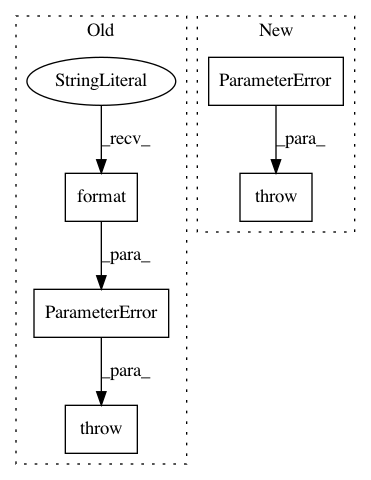

cfff799d604ea57385ea2c0e49d6ed9662a38a17,librosa/core/constantq.py,,cqt,#Any#Any#Any#Any#Any#Any#Any#Any#Any#Any#Any#,22
Before Change
// Make sure our hop is long enough to support the bottom octave
if np.mod(hop_length, 2**n_octaves) != 0 or hop_length < 2**n_octaves:
raise ParameterError("hop_length must be a positive integer multiple of 2^{0:d} "
"for {0:d}-octave CQT".format(n_octaves))
// Now do the recursive bit
fft_basis, n_fft, filter_lengths = __fft_filters(sr, fmin_t,
n_filters,
After Change
// Make sure our hop is long enough to support the bottom octave
num_twos = __num_two_factors(hop_length)
if num_twos < n_octaves - 1:
raise ParameterError("hop_length must be a positive integer multiple of 2^{0:d} "
"for {1:d}-octave CQT".format(n_octaves - 1, n_octaves))
// Now do the recursive bit
fft_basis, n_fft, filter_lengths = __fft_filters(sr, fmin_t,
n_filters,
In pattern: SUPERPATTERN
Frequency: 3
Non-data size: 5
Instances
Project Name: librosa/librosa
Commit Name: cfff799d604ea57385ea2c0e49d6ed9662a38a17
Time: 2015-07-01
Author: ebattenberg@gmail.com
File Name: librosa/core/constantq.py
Class Name:
Method Name: cqt
Project Name: librosa/librosa
Commit Name: d9f36b1c8bb77f6829c51987ce310831730623ba
Time: 2019-12-27
Author: kogito@hotmail.fr
File Name: librosa/feature/inverse.py
Class Name:
Method Name: mfcc_to_mel
Project Name: librosa/librosa
Commit Name: 51a8d4ffd5645f93758930a9a3603eac8285dae9
Time: 2019-02-21
Author: brian.mcfee@nyu.edu
File Name: librosa/segment.py
Class Name:
Method Name: recurrence_matrix